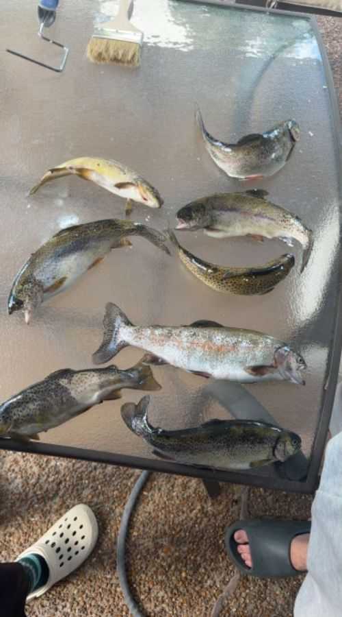

Fly fishing is my favorite way to slow down. I like getting to the river early, when the water is quiet and the fish are starting to rise. Reading the current and picking the right fly feels like solving a puzzle.
It also gets me outside and away from screens. Even on days when I do not catch anything, a few hours on the water around Tennessee is always worth it.
Want to learn more? Check out Trout Unlimited, a group that protects rivers and streams and helps new anglers get started.